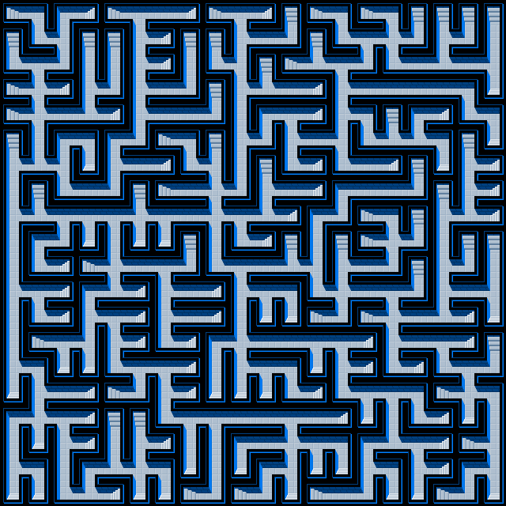

import laby
import wx
myApp = wx.App(0)
maze = laby.Labyrinth.random(9, 9)
maze.change(4, 0, 0)
maze.change(8, 4, 1)
maze.save("garden.txt")
maze.paint(wx.Image("tileset/garden.png",
wx.BITMAP_TYPE_ANY)).SaveFile("garden.png",
wx.BITMAP_TYPE_PNG)
I created the module laby.py for the creation and manipulation of labyrinths. This module can be used from the command line (without any knowledge of Python), or from within other Python programs. Furthermore, a mathematical model of a labyrinth can be converted to a graphical representation.
As a consequence, I split the explanation of laby.py into several parts: in the next chapter, I explain what a labyrinth is, and define some basic terms and concepts. In the third chapter, I explain the command line usage. The fourth chapter explains the class Labyrinth, the most important part of the modul laby.py, in detail.
Together with the python files comes a collection of tilesets. Some remarks about these tilesets is added in the fifth chapter. The sixth chapter concludes with some more or less useful links (like where to get Python, without which nothing of the following will work).
A labyrinth is something like this:
This labyrinth shows some specialties. For example, it has only one connected area. It is also possible to have several areas, with no connection between different areas:
Both these labyrinths have another special property: they don't contain a circle (they are circle-free), unlike the next labyrinth:
A labyrinth can be understood as a special case of a mathematical graph. In the context of laby.py, we are only dealing with rectangular labyrinths, composed of rectangular tiles or cells.
Conceptually, we thing of the labyrinth as living on a torus: if something passes the top border, it re-enters through the bottom border. If something passes the right border, it re-enters through the left border.
The labyrinths shown so far don't use this possibility. Therefore, we call them flat.
Another possibility would be that the top and bottom border are respected, but not the left and right border (like the maps in the game "Civilization"). This would be a ring. Still another possibility would be a violation of the top and bottom border, bot not the left and right border, but this possibility is not used here.
FlatNote that all three labyrinths above contain a single connected area and are circle-free.
Each cell has 4 neighboring cells: one north, one east, one south and one west. For each neighbor, there are two possibilities: there can be a wall between them (expressed with a 0), or a door (expressed with a 1). The four directions are numbered from 0 to 3:
To describe the state of an individual cell, we use four bits: one bit for each direction. Let N, E, S and W be either 0 or 1 (depending whether there is a wall or a door in this direction), the state of a cell is
value = 1 * N + 2 * E + 4 * S + 8 * W
Strictly speaking, we could do with just two bits, like N and E. If a cell has a door in the south, its southern neighbor must have a door in the north, and so on. Using 4 bits instead of two allows for the possibility of inconsistencies. This may look like a drawback for our approach (and sometimes it is), but there are some advantages: sometimes, the possibility of inconsistencies is something wanted, and the use of 4 bits makes the painting of labyrinths easier.
The next image shows all 16 possible states a cell can have:
Besides those basic 4 bits, a cell is allowed to have additionally bits. The meaning of these additionally bits is not fixed; they can be used for whatever pleases you. Example for higher bits are provided below.
A labyrinth is basically, in the context of laby.py, a rectangular matrix of non-negative integers. Such a matrix can be converted in an image of the labyrinth. Such a conversion needs a mapping from integers to tile images. Such a conversion map is provided by a tileset. A tileset is an image consisting of 2b subimages, with b the number of bits used. For the most basic option, at least 16 subimages (for the 16 possible states) are needed.
If an individual tile has width w and height h, the tileset has height h and width w * 2b, that is, at least w * 16. The next image shows a possible tileset:
The following labyrinth
2 12 6 8 2 14 10 8 2 14 8 4 2 12 2 12 4 4 4 4
4 3 13 4 4 7 8 4 4 7 10 9 4 3 14 15 9 7 9 5
3 14 9 5 5 7 8 5 3 13 4 2 11 14 9 3 10 11 10 13
2 15 8 7 9 7 10 9 4 7 11 10 8 7 10 10 10 10 12 1
2 15 10 11 8 7 10 10 9 5 6 14 8 7 12 4 6 8 3 12
4 5 6 12 6 9 2 12 4 7 9 7 10 13 3 11 11 12 4 1
7 11 13 1 7 10 8 3 13 5 4 3 8 3 10 8 4 1 7 8
5 4 3 10 9 4 2 10 15 9 7 10 8 6 10 10 9 4 7 8
7 11 14 14 14 15 14 10 15 14 11 8 6 9 2 12 4 7 11 8
5 6 9 1 5 1 1 4 5 3 8 4 5 4 2 15 9 5 4 4
5 3 8 2 15 10 14 9 3 14 10 11 13 7 10 9 4 7 9 5
7 14 8 6 11 8 7 10 8 7 14 12 3 15 10 14 9 7 10 13
5 3 8 7 14 8 7 10 8 5 1 1 2 9 2 15 10 11 8 1
5 2 14 13 7 8 3 8 6 15 10 10 14 14 8 7 10 14 8 4
7 12 1 1 3 14 14 8 5 7 14 12 1 7 8 3 8 3 14 9
1 7 10 8 2 9 7 8 1 1 1 3 8 3 14 14 12 2 15 12
6 15 14 8 4 4 3 14 14 10 10 14 10 8 1 5 3 8 1 5
5 1 7 8 5 7 8 5 5 6 10 15 14 12 6 11 14 8 2 13
7 12 5 6 11 15 12 1 5 1 6 13 1 1 7 12 7 8 6 13
1 1 3 11 8 1 1 2 9 2 9 1 2 10 9 1 1 2 9 1
corresponds to this image:
The very first image in this page shows another possible rendering.
The command line usage allows the creation and rendering of a random labyrinth. To be able to use laby.py you need Python installed on your machine. To be able to render your labyrinths, you need also wxPython installed.
Assume laby.py is located under c:\laby\laby.py. In this case, it is possible to invoke the program with
with command being one of the three commands explained below, parameters being some parameters and options being some options.
Under Windows, it is also possible to omit python and simply write
The command make is invoked with
This creates the textfile outfile, containing a labyrinth with the according width and height.
Example:
This will create a file test.txt containing the definition of a labyrinth:
laby.Labyrinth([
[4, 4, 2, 14, 8, 4, 2, 10, 14, 8, 6, 8, 6, 8, 4, 6, 8, 6, 12, 4],
[7, 11, 12, 5, 6, 11, 8, 4, 5, 6, 9, 4, 5, 6, 9, 5, 6, 9, 3, 9],
[1, 6, 13, 7, 11, 14, 8, 3, 15, 11, 8, 3, 15, 11, 8, 7, 15, 14, 8, 4],
[2, 9, 7, 9, 4, 1, 2, 10, 15, 8, 4, 6, 11, 10, 10, 9, 1, 3, 14, 13],
[4, 6, 11, 14, 15, 14, 14, 14, 15, 10, 11, 11, 10, 12, 4, 4, 4, 4, 1, 1],
[7, 15, 12, 5, 5, 1, 5, 5, 5, 2, 14, 14, 12, 7, 11, 15, 13, 3, 12, 4],
[1, 1, 5, 1, 7, 8, 1, 5, 7, 10, 9, 1, 1, 3, 8, 1, 3, 10, 11, 9],
[2, 14, 13, 2, 15, 10, 8, 5, 3, 14, 14, 14, 14, 10, 12, 4, 6, 8, 6, 12],
[4, 1, 1, 2, 15, 10, 12, 3, 12, 1, 5, 1, 3, 8, 7, 15, 15, 10, 13, 1],
[3, 10, 10, 10, 9, 2, 11, 8, 1, 2, 11, 10, 10, 8, 1, 1, 3, 8, 3, 8]
])
The actual numbers may differ, since the labyrinth is created using a random number generator.
The created labyrinth uses only the four basic bits. It is guaranteed to be consistent and circle-free.
The number of areas created can be controlled with the option --grains. This option determines how many connected areas are generated. It should be a number between 1 and width * height. If this option is missing, only one area will be created.
Example:
This will create a labyrinth with seven disconnected areas.
More possible options are --ring and --torus. The option --ring produces a labyrinth in which a passage that disappears on the right can continue on the left. With the option --torus, the same is true for the top and bottom edge (if both --ring and --torus are found, --torus takes precedence).
Examples:
The resulting file test.txt can be rendered using the convert command (see next section). But it is also possible to immediately render the resulting labyrinth (if wxPython is installed). This uses the --image option, which allows to provide the filename of an image file where the resulting rendered labyrinth should be stored.
Examples:
The image is always stored as a PNG image, regardless of the filename and its ending you provide (in fact, the option --image=testmaze.bmp will result in the creation of the file testmaze.bmp.png).
The program will search for the file tileset/simple.png to use it as the tileset for rendering. You may provide an alternative tileset using the --set option.
Example:
The command make creates a labyrinth that uses only the basic four bits. Nevertheless, you may want to use a tileset containing more than 16 tiles, like the 7-bit tileset tileset/simple.7.png which contains 128 subimages. Without further information, the program will assume that you want to use a 4-bit tileset with 16 subimages. You can change this behavior with the option --bits.
Example:
Finally, some hints: the command make can be abbreviated with a simple m; similar, convert can be abbreviated as c and flatten as f.
All command line options have an alternative syntax with only one leading hyphen and a single letter. The following two lines are equivalent:
Abbreviated and unabbreviated forms can be mixed.
Textfiles created with make can be rendered with the command convert using the following parameters:
In this case, infile is the name of a file created with make, and outfile is the name of the image file that is to be created. This file will be written as a PNG file.
Example:
The program will search for the file tileset/simple.png to use it as the tileset for rendering. You may provide an alternative tileset using the --set option.
Example:
If the tileset contains more than 16 subimages, you need to provide this information using the --bits option, like in the case of the make command.
Example:
Linkz is a nice little game that comes with some tilesets similar to the tilesets used here. But instead of using a big image consisting of 16x1 subimages, they use a big image consisting of 4x4 subimages.
The command flatten provides an easy and convenient method to convert a 4x4 tileset into a 16x1 tileset:
with infile being an image file in 4x4 format and outfile being the name of the target file.
Example:
There are no options for the flatten command.
The module laby.py contains, besides the code for the command line use, mainly a single class, the class Labyrinth. This class allows the creation, manipulation and rendering of Labyrinths.
Accordingly, the following chapters provide a survey of all methods of the class Labyrinth.
For more examples, take a look at the file examples.py, which contains some code snippets. I also tried to add some helpful docstrings to the source code of laby.py.
The most basic way to create a new Labyrinth is to use the constructor. The constructor takes an optional argument, a list of list of integers. This argument is a list of rows, each row a list of cells.
Example:
This classmethod creates a new, empty labyrinth with width n and height m. Since it is a classmethod, no instance is needed to invoke this method.
Example:
This classmethod creates a new labyrinth with width n and height m and as much doors as possible, depending on the type typ. typ may be one of laby.FLAT, laby.RING and laby.TORUS. Since it is a classmethod, no instance is needed to invoke this method.
Example:
This creates the following labyrinth:
This creates a random circle-free labyrinth with width n, height m, type typ and grains different areas. Since it is a classmethod, no instance is needed to invoke this method.
Example:
Saves the labyrinth as a text file.
Loads the labyrinth from a text file. This is a class method, so no instance is needed to invoke this method.
Example:
Returns the width of the labyrinth.
Returns the height of the labyrinth.
Number of cells with content 0.
Number of inconsistencies.
Number of cells with higher bits (content greater 15).
Highest bit in use. For a labyrinth created with random or full, this is usually 3 (counting starts with 0). For a labyrinth created with empty, this is -1 (meaning all cells have the value 0).
Number of areas.
Returns a new "labyrinth". All areas in the original labyrinth are labeled with a number (starting with 1), and the new maze is filled with those labels. For example, if cell (3, 5) belongs to area 4, the new labyrinth has the value 4 in the cell (3, 5).
The following example can be used to color labyrinths according to their different areas.
import laby
import wx
myApp = wx.App(0)
maze = laby.Labyrinth.random(20, 15, laby.FLAT, 7)
maze2 = maze.area_map()
for i in range(maze.width()):
for j in range(maze.height()):
maze.set(i, j, maze.get(i, j) + 16 * (maze2.get(i, j) % 8))
tileset = wx.Image("tileset/simple.7.png", wx.BITMAP_TYPE_ANY)
img = maze.paint(tileset, 7)
img.SaveFile("helpillu11.png", wx.BITMAP_TYPE_PNG)
Returns a tupel (map, areas). The map is the same as returned by area_map. The list areas is a list of all areas of the labyrinth. Each area is itself a list of the points belonging to this area. Each point is a tupel of the form (x, y).
The following example searches the largest area and colors all cells in this area.
import laby
import wx
myApp = wx.App(0)
maze = Labyrinth.random(20, 15, FLAT, 7)
map, areas = maze.area_survey()
maxa = 0
sela = areas[0]
for a in areas:
if len(a) > maxa:
maxa = len(a)
sela = a
for x, y in sela:
maze.setb(x, y, 4, 1)
tileset = wx.Image("tileset/simple.7.png", wx.BITMAP_TYPE_ANY)
img = maze.paint(tileset, 7)
img.SaveFile("helpillu12.png", wx.BITMAP_TYPE_PNG)
The parameters start and stop are supposed to be (x, y)-tupels giving the coordinates of two points.
The method returns a list of (x, y)-tupels which corresponds to a shortest path between start and stop.
It is guaranteed that there is no shorter path from start to stop, but it is not guaranteed that path(stop, start) yields the reverse path of path(start, stop).
If there is no path between start and stop (if they belong to different areas), None is returned.
This method should be treated with caution, since it is slow and memory-intensive. For a quicker method, see qpath.
Works like path.
If there is no connection between p_from and p_to, an empty list is returned.
The resulting path is not guaranteed to be the shortest possible path. Furthermore, it is not guaranteed that the path from p_to to p_from is the reverse of the path from p_from to p_to.
On the other hand, if there are several alternative paths, the computation of qpath is much faster (and less memory intensive) than the computation of path.
In a circle-free labyrinth, path and qpath are pretty much the same.
Works like path, but instead of returning the shortest path, a list of all possible paths is returned. Like path, paths can be memory and computation intensive and should be used with caution (at least if there are many circles present).
Value of the cell with the coordinates x and y.
Sets the value of the cell with the coordinates x and y. By convention, this should be a non-negative integer, but any value is allowed.
Value of the bth bit of the cell with the coordinates x and y. Counting of bits start with 0. The return value is either 0 or 1. Bit 0 corresponds to the northern edge, bit 1 corresponds to the eastern edge, bit 2 corresponds to the southern edge and bit 3 corresponds to the western edge. The meaning of the higher bits is undefined.
Sets the value of the bth bit of the cell with the coordinates x and y. This should be either 0 or 1.
Manipulating single lower bits has the disadvantage of making the labyrinth potentially inconsistent. setb is therefore better suited for the manipulation of higher bits. In case of the four basic bits, a bit should only be changed if the bit of the corresponding neighboring cell is also changed. This can be done with the method change. x and y are the coordinates of the cell where an edge shall be changed. dir is the direction of the edge, with 0 = north, 1 = east, 2 = south, 3 = west. bit defines whether a door (bit 1) or a wall (bit 0) shall be added.
The value of the neighboring cell is updated accordingly. Using change guarantees that a consistent labyrinth stays consistent.
Example:
import laby
import wx
myApp = wx.App(0)
maze = laby.Labyrinth.empty(4, 4)
maze.change(0, 0, 1)
maze.change(1, 0, 1)
maze.change(2, 0, 1)
maze.change(3, 0, 2)
maze.change(3, 1, 2)
maze.change(3, 2, 2)
maze.change(3, 3, 3)
maze.change(2, 3, 3)
maze.change(1, 3, 3)
maze.change(0, 3, 0)
maze.change(0, 2, 0)
maze.change(0, 1, 1)
maze.change(1, 1, 1)
maze.change(2, 1, 2)
maze.change(2, 2, 3)
maze.setb(0, 0, 0, 1) # This introduces an inconsistency!
tileset = wx.Image("tileset/simple.png", wx.BITMAP_TYPE_ANY)
img = maze.paint(tileset)
img.SaveFile("helpillu13.png", wx.BITMAP_TYPE_PNG)
List containing all accessible neighbors of the cell with the coordinates x and y. This list contains zero to four neighboring cells as (x, y)-tupels, depending whether they are connected with a door or a wall. In the case of torus or ring shaped labyrinths, hood will be able to find "neighbors on the other side".
Example:
import laby
maze = laby.Labyrinth.empty(4, 4)
maze.change(3, 1, 2)
maze.change(3, 1, 1)
print maze.hood(3, 1)
# [(0, 1), (3, 2)]
Returns a deepcopied clone of the labyrinth. This means that any manipulation of the clone has no affect on the original. Useful in conjunction with invert or transpose.
Transposes the labyrinth in place (performs a diagonal flip, in case you are wondering what a transposition is; exchanges x and y). This allows the creation of vertical rings, if such a thing is needed.
Example:
Inverts the labyrinth. A labyrinth is a system of passages, separated by walls, respectively a system of walls, separated by passages. invert exchanges the meaning of walls and passages. Imagine that by convention, passages are white and walls are black. Now you take a labyrinth and paint all walls white and all passages black. This would make the labyrinth look like its own inversion.
OriginalReturns a new labyrinth with an additional frame of size size. For a flat labyrinth, this frame will be empty.
The following examples show flat, ring-shaped and torus-shaped labyrinths with an additional border of size 3.
The cells within the frame are regular cells and can be manipulated like any other cell.
Returns a new labyrinth twice as large. In this new labyrinth, passages are replaces with walls, and the border between passages and walls becomes the new passages.
SingleIn the language of Graph Theory: a tree is converted into a circle. A simple circle is converted into two concentric circles.
Adds additional doors to the labyrinth. Depending on typ, those additional doors do or do not respect the borders of the labyrinth.
hori is the probability of a wall between two horizontally neighboring cells to disappear. vert is the probability of a wall between two vertically neighboring cells to disappear. If no value for vert is provided, the value hori is used for vert too.
Returns a wx.Image, containing the rendered version of the labyrinth.
tileset is a wx.Image containing the tiles that should be used for rendering. bits serves two purposes: it indicates how many subimages the wx.Image tileset contains (that is, 2bits), and how many bits of the cell values of the labyrinth should be taken into consideration; higher bits are ignored.
Example:
import laby
import wx
myApp = wx.App(0)
maze = laby.Labyrinth.random(40, 30, laby.FLAT, 20)
maze2 = maze.area_map()
for i in range(maze.width()):
for j in range(maze.height()):
maze.set(i, j, maze.get(i, j) + 16 * (maze2.get(i, j) % 8))
tileset4 = wx.Image("tileset/small.png", wx.BITMAP_TYPE_ANY)
tileset7 = wx.Image("tileset/small.7.png", wx.BITMAP_TYPE_ANY)
img4 = maze.paint(tileset4)
img7 = maze.paint(tileset7, 7)
img4.SaveFile("maze.png", wx.BITMAP_TYPE_PNG)
img7.SaveFile("maze_colored.png", wx.BITMAP_TYPE_PNG)
Not only is wxPython needed for this to work: to be able to load or save image files, the image handlers of wxPython must be initialized. This is the reason why the example code above contains the line
The only purpose of the dummy myApp is to cick in the initialization of the wxPython image handlers.
The folder laby/tileset/ contains some tilesets. Most of them are self-explanatory, others may require some comment.
The tilesets in this category are simply some decorative variations of the theme "labyrinths".
"dungeon.png": 4 Bits = 16 Tiles, each 32x32
"cave.png": 4 Bits = 16 Tiles, each 16x12
"garden.png": 4 Bits = 16 Tiles, each 26x26
The tilesets in this category may produce some strange effects. They are not easily recognizable as labyrinths, but may (depending on taste and personal preferences) produce nice images. I made them for the game "Linkz" (within this game, "tough" is quite nightmarish; "relaxed" is an easier variation of it, hence the name; I started "tracks" with railroad tracks in mind, but came out with some garden paths).
"diagonal.png": 4 Bits = 16 Tiles, each 32x32
"relaxed.png": 4 Bits = 16 Tiles, each 32x32
"tough.png": 4 Bits = 16 Tiles, each 32x32
"tracks.png": 4 Bits = 16 Tiles, each 52x32
The tilsets in this category are not necessarily the most satisfying with regard to aesthetics, but they are useful for examining labyrinths.
"simple.png": 4 Bits = 16 Tiles, each 20x20
This is the default tileset. The passages are slightly thicker than the walls. This tileset is also the origin of the next three.
"black.png": 4 Bits = 16 Tiles, each 20x20
Sometimes, instead of areas of size 1, some kind of no-go regions are needed. Therefore this slight variation.
"basic.png": 4 Bits = 16 Tiles, each 20x20
The purpose of this one should be obvious. Each tile carries its hexadecimal number.
"pillars.png": 4 Bits = 16 Tiles, each 20x20
Sometimes, it is desirable to color walls individually. This tilset makes this easier by distinguishing between walls and pillars.
"small.png": 4 Bits = 16 Tiles, each 4x4
Large labyrinths require small tilesets.
"tiny.png": 4 Bits = 16 Tiles, each 2x2
This is the smallest tileset possible, with walls and passages being only one pixel width. Unfortunately, it renders a consistent labyrinth and one of its inconsistent twins alike, that is, if you are dealing with inconsistent labyrinths, information will get lost. For consistent labyrinths, no such problem arises.
This is actually a 2-bit tileset with four different tiles; but as a matter of convenience, I repeated those four tiles four times and thereby made it a proper 16 bit set.
The following tilesets are 7-bit tilesets with 128 tiles. The additional 3 bits are used for coloring: the first bit indicates red, the second green and the third blue. This results in 8 possible colors. They are based on tilesets of the previous section. I adopted the convention of adding a ".7" between the filename and its suffix.
"simple.7.png": 7 Bits = 128 Tiles, each 20x20
"black.7.png": 7 Bits = 128 Tiles, each 20x20
"small.7.png": 7 Bits = 128 Tiles, each 4x4
"tiny.7.png": 7 Bits = 128 Tiles, each 2x2
I managed to reduce the time complexity of the random method of the class laby.Labyrinth from something like o(n2·m2) to o(n1.5·m1.5) (with n and m being width and height of the labyrinth). Using a really good hashtable for the "potentionally alive cells" could reduce this to o(n·m), I think.
The algorithms for the computation of areas or paths are neither fast nor clever and could be improved.
Rewriting so that other graphics libraries than wxPython could be used would be nice (detect which suitable additional package is present, and use one of them, instead of requiring a specific one of them).
A complete refactoring so that the individual cells of a labyrinth don’t store an integer, but a dictionary with the state of the edges of the cell being one entry among others (which would make it easier to store some interesting state).
Or, quite the opposite: a complete refactoring using NumPy to speed things up.
This package was written by me, Jan Thor. My homepage and email are: